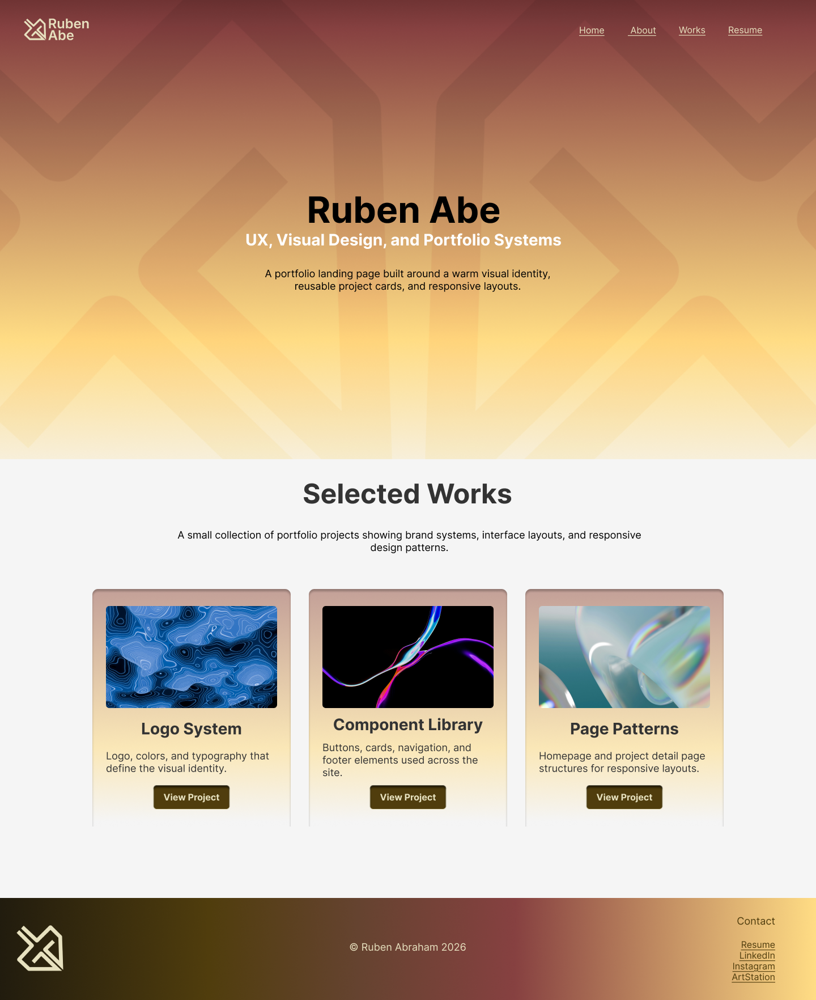

Homepage pattern
Responsive homepage variations
This page displays the final homepage design and grid exports from Figma across web, tablet, and phone breakpoints.
Web design
Desktop width at 1280px

Export the selected Figma frame and save it in:
assets/images/patterns/
Use the exact file name connected to this tab.
assets/images/patterns/
Use the exact file name connected to this tab.